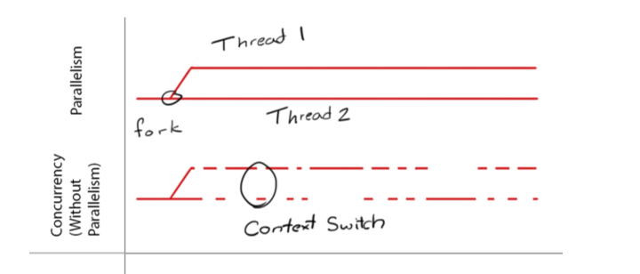

今天学python，遇到了协程，这个之前写java没怎么用过，今天查了下记录下来，反复理解。
协程其实就是函数调用,相比线程更为轻量级，代码示例如下：
def 协程1():
pass
def 协程2():
pass
def 协程3():
pass
def 协程n():
pass
while 1:
协程1()
协程2()
协程3()
协程n()
协程就是一个个函数，然后死循环调用，以上就是协程的基本思想。没什么神秘的~需要配合异步IO使用，避免阻塞~
参考文章： https://segmentfault.com/q/1010000007757966
协程，又称微线程，纤程。英文名Coroutine。协程看上去也是子程序，但执行过程中，在子程序内部可中断，然后转而执行别的子程序，在适当的时候再返回来接着执行。
协程允许一个执行过程A中断，然后转到执行过程B，在适当的时候再一次转回来，有点类似于多线程。但协程有以下2个优势：
协程的数量理论上可以是无限个，而且没有线程之间的切换动作，执行效率比线程高。
协程不需要“锁”机制，即不需要lock和release过程，因为所有的协程都在一个线程中。
相对于线程，协程更容易调试debug，因为所有的代码是顺序执行的。
参考文章： https://zhuanlan.zhihu.com/p/24118476?refer=pythoner
没有啥复杂的东西，考虑清楚需求，就可以很自然的衍生出这些解决方案。一开始大家想要同一时间执行那么三五个程序，大家能一块跑一跑。特别是UI什么的，别一上计算量比较大的玩意就跟死机一样。于是就有了并发，从程序员的角度可以看成是多个独立的逻辑流。内部可以是多cpu并行，也可以是单cpu时间分片，能快速的切换逻辑流，看起来像是大家一块跑的就行。但是一块跑就有问题了。我计算到一半，刚把多次方程解到最后一步，你突然插进来，我的中间状态咋办，我用来储存的内存被你覆盖了咋办？所以跑在一个cpu里面的并发都需要处理上下文切换的问题。进程就是这样抽象出来个一个概念，搭配虚拟内存、进程表之类的东西，用来管理独立的程序运行、切换。后来一电脑上有了好几个cpu，好咧，大家都别闲着，一人跑一进程。就是所谓的并行。因为程序的使用涉及大量的计算机资源配置，把这活随意的交给用户程序，非常容易让整个系统分分钟被搞跪，资源分配也很难做到相对的公平。所以核心的操作需要陷入内核(kernel)，切换到操作系统，让老大帮你来做。有的时候碰着I/O访问，阻塞了后面所有的计算。空着也是空着，老大就直接把CPU切换到其他进程，让人家先用着。当然除了I\O阻塞，还有时钟阻塞等等。一开始大家都这样弄，后来发现不成，太慢了。为啥呀，一切换进程得反复进入内核，置换掉一大堆状态。进程数一高，大部分系统资源就被进程切换给吃掉了。后来搞出线程的概念，大致意思就是，这个地方阻塞了，但我还有其他地方的逻辑流可以计算，这些逻辑流是共享一个地址空间的，不用特别麻烦的切换页表、刷新TLB，只要把寄存器刷新一遍就行，能比切换进程开销少点。如果连时钟阻塞、 线程切换这些功能我们都不需要了，自己在进程里面写一个逻辑流调度的东西。那么我们即可以利用到并发优势，又可以避免反复系统调用，还有进程切换造成的开销，分分钟给你上几千个逻辑流不费力。这就是用户态线程。从上面可以看到，实现一个用户态线程有两个必须要处理的问题：一是碰着阻塞式I\O会导致整个进程被挂起；二是由于缺乏时钟阻塞，进程需要自己拥有调度线程的能力。如果一种实现使得每个线程需要自己通过调用某个方法，主动交出控制权。那么我们就称这种用户态线程是协作式的，即是协程。本质上协程就是用户空间下的线程。
参考文章：https://www.zhihu.com/question/20511233/answer/24260355
进程拥有自己独立的堆和栈，既不共享堆，亦不共享栈，进程由操作系统调度。 线程拥有自己独立的栈和共享的堆，共享堆，不共享栈，线程亦由操作系统调度(标准线程是的)。 协程和线程一样共享堆，不共享栈，协程由程序员在协程的代码里显示调度。 进程和其他两个的区别还是很明显的。 协程和线程的区别是：协程避免了无意义的调度，由此可以提高性能，但也因此，程序员必须自己承担调度的责任，同时，协程也失去了标准线程使用多CPU的能力。
参考文章http://blog.csdn.net/hairetz/article/details/16119911
最后复习下并发与并行的概念：
深入理解计算机系统CSAPP的回答。
并发（Concurrency）是说进程B的开始时间是在进程A的开始时间与结束时间之间，我们就说A和B是并发的。
并行（Parallel Execution）是并发的真子集，指同一时间两个进程运行在不同的机器上或者同一个机器不同的核心上。
对于单核，多线程的多任务是在单cpu交替执行，属于并发；
对于多核，多线程的任务如果能够分布在各个cpu上（线程数少许核心数），那么就是并行。
并发（Concurrency）是同时处理很多事情（dealing with lots of things at once），并行（Parallelism）是同时执行很多事情（doing lots of things at once）；
 参考：https://www.zhihu.com/question/33515481/answer/67962756